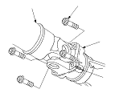
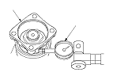

Transfer Backlash Inspection on Car
Raise the front of the vehicle, and support it with safety stands.
Set the parking brake, and block both rear wheels securely.
Shift to neutral position.
Make a reference mark (A) across the propeller shaft (B) and the companion flanges (C).
Separate the propeller shaft from the transfer assembly.

Set a dial indication (A) on the companion flange (B), then measure the transfer gear backlash.
STANDARD:
0.06−0.16 mm (0.002−0.006 in.)
If the measurement is out of specification,
remove the transfer assembly
and
inspect the transfer assembly.
Before reinstalling the propeller shaft, check the transfer assembly oil seal for damage and fluid leaks.
If the seal is leaking,
remove the transfer assembly,
replace the oil seal, and
adjust the total starting torque.
Do not replace the oil seal with the transfer assembly installed on the transmission.
If the seal is OK, reinstall the propeller shaft.
